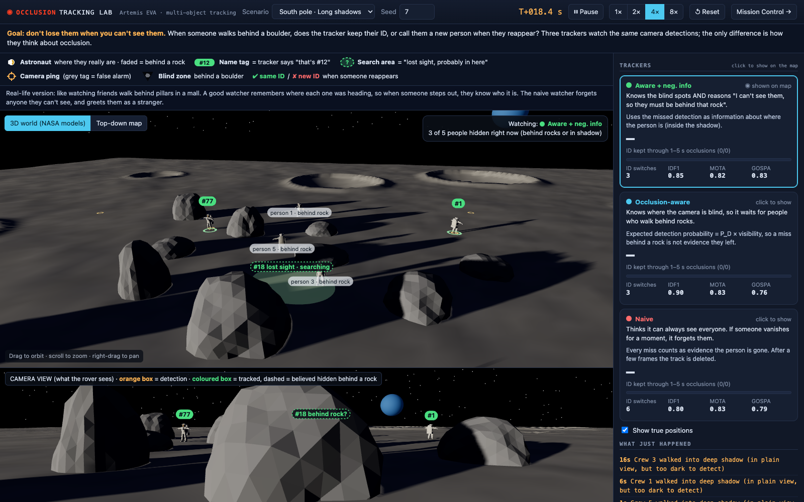

Lunar Occlusion Tracking
A rover's mast camera tracks astronauts walking among boulders at the lunar south pole. When someone steps behind a rock or into a long polar shadow, does the tracker keep their identity, or call them a new person when they reappear?
I modelled 3-D line of sight to each person and built it into the tracker. A missed detection now counts as evidence that the person left only if the tracker expected to see them. From there the tracker climbs a ladder, one idea at a time, and every step is measured on identical detections.
Same identity kept after a 1 to 5 s hide
Camera only, boulder field. Higher is better. The naive tracker assumes everyone is always visible.
Identity switches per 300 s run
Lower is better. An identity switch is the tracker giving a known person a new ID.
20 random seeds × 300 s for every row, with 95% confidence intervals in the repository. The 89% is [85–92] over 275 hides.
What the experiments showed
- More sensors make a naive tracker worse. With camera, lidar and a second camera it goes from 75.6 to 254 identity switches, because every sensor that cannot see a person reports them as gone. Sensors only help a tracker that knows what each one can see.
- A second viewpoint beats a better sensor at the same spot. A second camera cut switches from 47.8 to 19.6. A lidar on the same mast cut them to 37.9.
- Long hides need appearance. Motion alone keeps 7% of identities through hides over 5 s. Appearance re-identification lifts that to 50%, and a second camera to 87%.
- An event camera works if the tracker reasons about visibility. I fitted an event camera model to real recordings (the EVOS dataset). With occlusion reasoning it matches the ordinary camera while people keep moving (51.4 against 47.8 switches, intervals overlap). It fails when people stand still, which told me the motion model needs a "stopped" mode.
- Lidar masks from range alone. Instance segmentation on the lidar range image reaches 0.94 mean mask IoU against the true person masks.
Checked against industry tools
I ran MathWorks' built-in trackers on the same detections. Unaided, none of them keeps an identity through a hide. Given my visibility model, all three improve.
| Tracker | Same ID after 1 to 5 s hide | With my visibility model |
|---|---|---|
MathWorks trackerGNN | 0% | 12% |
MathWorks trackerTOMHT | 0% | 37% |
MathWorks trackerJPDA (JIPDA) | 0% | 57% |
| Mine, motion only | 0% | 49% |
MATLAB, 10 seeds × 300 s. JIPDA with visibility beat my own motion-only tracker (33 against 44 switches per run). I report that because it showed me what to build next: soft association, which weighs every nearby detection instead of committing to one.
Limits. Simulated walkers and a sensor model, not a neural detector on real images. That is why Part 2 exists.